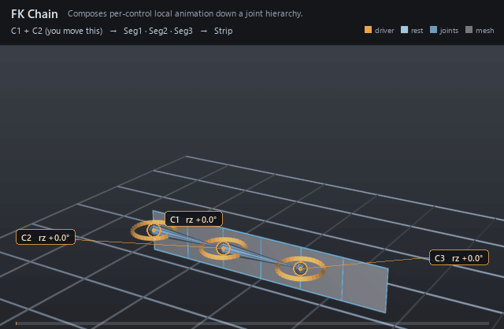

| On this page | |
| Node type | RigExecFkChain |
| Example | fk_chain.usda |
| Category | Solvers |
Overview ¶

Forward kinematics in its simplest form: one control per joint, each
authoring a local rotation (or translation), composed down the chain so
every joint inherits its ancestors' motion. Use it for tails, spines,
fingers — anywhere the animator wants direct control of every link. The
controls are normally nested one under the next so each handle rides the
one above it, which is what rigExec:controlSpace = "parentRelative"
declares.
Applies control frames/offsets to a rest hierarchy. Publishes aggregate computePointFrameArray; addressable joint providers publish scalar frames (spec section 4.1).
How it works ¶
The solver runs in the pose phase: it reads each targeted control's
computePointFrame and computeRestFrame, forms that control's
rest-to-pose delta, and publishes one aggregate computePointFrameArray
whose element N is written to rigExec:joints[N] — the two lists are
parallel, so control N poses joint N and joint N inherits the composed
frames above it. rigExec:controlSpace decides how the deltas compose:
world chains them (W_i = W_(i-1) . A_i) for sibling controls, while
parentRelative takes each delta as-is because a nested control's frame
already travels with its parent. The chain MEASURES its deltas from its
controls' rests, but the basis it composes them onto is the joint's rest
reference — which the pose stack replaces with the frame the steps below the
chain left (spec section 4.2). So a constraint below the chain moves the
joint and the chain carries that displacement through its solve instead of
replacing it; a joint no step below it wrote keeps its authored rest and the
chain answers exactly as it always did. Rest offsets between joints set the bone
lengths and pivots — nothing is measured in absolute numbers — but the
solve itself is absolute: unless rigExec:startFrame names the provider
the chain hangs from, the chain ignores whatever its joints sit under.
Skinning movers then read the posed joints at the final phase.
Wiring ¶
| Relationship | Points to | Required |
|---|---|---|
rigExec:controls | Ordered animator controls, one per joint. | yes |
rigExec:joints | Ordered nested joints the chain poses; with none, the solver publishes frames nothing reads. | no |
rigExec:controlSpace | parentRelative when the controls are nested under each other; world for sibling controls. | no |
Parameters ¶
Node parameters
purposeuniform token, default "guide"
Render purpose, overriding UsdGeomImageable's default
fallback: joint and solver guides are DIAGNOSTICS, drawn when a
viewer asks for guides.
This is the stock attribute rather than a RigExec-specific token so
that the bounds and the drawing cannot disagree: UsdGeomBBoxCache
classifies a prim's extent by this exact attribute, and the results
scene index stamps the same resolved value onto the guide it
synthesizes. A control keeps the inherited default -- it is the
rig's interaction surface, not a diagnostic -- and authoring
guide on one moves both its drawing and its bounds together.
rigExec:controlsrelationship
Ordered chain controls (parents resolved via rigExec:parent).
rigExec:controlSpaceuniform token, default "world"
What each control's posed frame already contains, i.e. whether it carries the motion of the control before it in the chain.
world (the default): the controls are independent asset-space
frames, siblings under the rig's Controls scope, each contributing
only its own rest-to-pose delta A_i; the solver composes them down
the chain, W_i = W_(i-1) . A_i. Posing a control moves the joints
below it but NOT the child controls, which stay at their rest.
parentRelative: control i is authored as a namespace descendant of
control i-1 with a rest relative to it, so its computePointFrame is
already W_(i-1) . restLocal_i . D_i -- it travels with its parent
the way an FK limb control does -- and its asset-space
rest-to-pose delta is the whole W_i. The solver therefore takes
each control's delta as-is instead of composing the parent in
again, which would apply the parent's motion twice. The joint
result is identical to world for the same avars; only the
control frames differ. Nesting is what makes the controls follow;
this token is what keeps the solver honest about it.
rigExec:startFramerelationship
Optional single provider (joint or control) whose POSED
frame is the base the whole chain hangs from: the solver composes
every element on top of that provider's rest-to-pose delta S, so
W_0 = S . A_0 instead of W_0 = A_0 (and in parentRelative,
W_i = S . A_i for every i, since there each control's delta is
already the whole chain map).
Unauthored is the historical behaviour, bit for bit: the chain is
an ABSOLUTE world solve that ignores whatever its joints hang from.
That is what this relationship exists to fix. Measured on a
synthetic a -> b -> c with an FkChain over [b, c] only: posing
a with avars:rz = 90 left b at (10,0,0) and c at (20,0,0) -- they
did not move at all, because nothing told the solver where its
chain starts. A hand built that way detaches from the wrist the
moment the arm moves.
Nesting the chain's first control under the thing it should follow is NOT a substitute when that thing is solver-posed: a solver-posed joint is an absolute override and namespace pose does not propagate through it (see rigEvaluator's hierarchicalProviders rule), and nesting under the arm's FK control follows in FK and stands still in IK. Pointing this relationship at the joint the chain hangs from -- the wrist, claimed by the arm's IK/FK blend -- follows in BOTH.
The target is an ordinary frame input, so the compiler already orders this solver after whatever poses the target and rejects a cycle. The start provider's own frame is NOT published as an element: cardinality stays exactly rigExec:controls, and each joint's element index is unchanged.
rigExec:jointsrelationship
Ordered output joints this solver poses (view-free extraction, user-directed 2026-07-25). List position is the aggregate element index; length is the effective sample count. The compiler binds each joint to one aggregate element in the derived layer.
guide:radiusdouble, default 1.0
Radius of the sphere and cone drawn at each aggregate element: the exact counterpart of RigExecJoint's guide:radius, including the rule that zero or negative draws no guides at all, which is how a solver's diagnostics are turned off.
Without it the elements are stuck at Hydra's fallback radius of 1.0. That is proportionate on an asset authored at tens of units and several times the size of the whole character on one authored at one unit -- the joints were given this knob for exactly that reason and the aggregate solvers were not, so turning guide display on for a small asset buried it in solver geometry.
guide:displayColorcolor3f, default (0.3, 0.6, 1.0)
guide:displayOpacityfloat, default 0.5
Example ¶
fk_chain.usda
Three controls curl a ten-quad strip. C2 is a namespace child of C1
and C3 of C2, each with the same local rest offset as its joint (2 units),
so the rings sit on Seg1/Seg2/Seg3 at x = 0, 2, 4 and each one rides the
one above it — the chain reads them with rigExec:controlSpace =
"parentRelative". One matrix mover per joint skins the strip through a
linear weight ramp, so each joint hands its influence to the next across a
two-unit span: the column on Seg2 is split 0.5 with Seg1, the midline
between Seg2 and Seg3 is split 0.5 to each, and the column on Seg3 is split
0.5 with Seg2. Both bends therefore draw as arcs rather than creases, and
the same handover is happening at every joint — the strip ends at x = 5 so
no part of it is a rigid slab hanging off the last one.
Open it live with:
bin\launch_usdview.bat docs\examples\fk_chain.usdaRe-render the GIF above with:
python docs/render_media.py --page fk_chainTips ¶
Tips
- Nesting the controls only works with
rigExec:controlSpace = "parentRelative": a nested control's frame already carries its parent's motion, so the defaultworldcomposes it in a second time. On this stage, dropping the token sends Seg3 to x = -0.45 at frame 1006 instead of x = 3.03. - Point
rigExec:startFrameat the joint the chain hangs from when that joint is posed by another solver; without it the chain is an absolute solve and the limb detaches from its parent. - FK pairs well with IK: blend the two aggregates through a Blend Point Frames node, or stack both solvers on the same joints —
rigExec:jointsis an ordered write, so the later writer simply replaces the frames the earlier one committed.
See also ¶
More solvers nodes ¶
 FK Chain
FK ChainComposes per-control local animation down a joint hierarchy.
 Two-Bone IK
Two-Bone IKAims a two-segment limb at an effector with pole-vector control.
 Spline IK
Spline IKLays a joint chain along a curve built from three controls.
 Blend Point Frames
Blend Point FramesBlends two solver poses per joint under one weight.
 Twist Distribution
Twist DistributionUnwinds roll between two frames across N interpolated frames.
 Ribbon
RibbonSamples a driver curve into transported frames for wrap deformers.